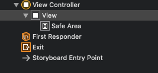

CocoaPods Hello Triangle
As of release 1.8.0, you can install Filament in your iOS application using CocoaPods.
This guide will walk you through creating a basic "hello triangle" iOS application using Filament and the Metal backend.

The full source for this example is here. If you're just looking to get something up and running quickly, download the project, pod install, build, and run.
We'll be walking through 7 steps to get the rotating triangle up and running. All of the code we'll be writing will be in a single ViewController.mm file, and you can follow along here.
- 1. Creating a Boilerplate App
- 2. Instantiating Filament
- 3. Creating a SwapChain
- 4. Clearing the Screen
- 5. Drawing a Triangle
- 6. Compiling a Custom Material
- 7. Animating the Triangle
Creating a Boilerplate App with Filament
We'll start fresh by creating a new Single View App in Xcode.
Give your app a name, and use the default options.

If you haven't used CocoaPods before, I recommend watching this Route 85 video to help you get set up.
Create a Podfile in the Xcode project directory with the following:
platform :ios, '11.0'
target 'HelloCocoaPods' do
pod 'Filament'
end
Then run:
pod install
Close the project and then re-open the newly created HelloCocoaPods.xcworkspace file.
Instantiating the Filament Engine
Before we do anything with Filament, we first need to include the appropriate headers. Filament exposes a C++ API, so any files that include Filament headers need to be compiled in a variant of C++. We'll be using Objective-C++.
You should be able to simply change the extension of the default ViewController from .m to .mm, though I've found Xcode to be buggy with this on occasion. To make sure Xcode recognizes it as an Objective-C++ file, check that the type of file is "Objective-C++ Source".

Then, add the following to the top of ViewController.
#include <filament/Engine.h>
using namespace filament;
We'll need to keep track of a few Filament objects, so let's add a section for private instance variables and add a pointer for our Engine instance.
@implementation Viewcontroller {
Engine* _engine;
}
The Filament Engine is our main entrypoint into Filament. We start by instantiating it inside viewDidLoad.
- (void)viewDidLoad {
[super viewDidLoad];
_engine = Engine::create(Engine::Backend::METAL);
}
We specify Engine::Backend::METAL to select the Metal backend. Filament also supports OpenGL on iOS, but we strongly recommend sticking to Metal.
Every Filament object we create must also be destroyed. Add the dealloc method and the following:
- (void)dealloc {
_engine->destroy(&_engine);
}
If you compile and run the app now you should see output similar to the following:
FEngine (64 bits) created at 0x10ab94000 (threading is enabled)
FEngine resolved backend: Metal
Creating a SwapChain
Before we can render anything, we'll first need to create a SwapChain. The SwapChain represents a platform-specific surface that can be rendered into. On iOS with Metal, it's a CAMetalLayer.
We could set up our own CAMetalLayer if we wanted to, but Apple provides a MTKView that is already backed by a CAMetalLayer. It also has a delegate protocol with some methods that will make things easier for us.
Inside Main.storyboard, change the type of ViewController's view to a MTKView.


Include the SwapChain.h and MTKView.h headers and make the ViewController conform to the MTKViewDelegate protocol.
#include <filament/SwapChain.h>
#import <MetalKit/MTKView.h>
@interface ViewController () <MTKViewDelegate>
@end
Add a new private var:
SwapChain* _swapChain;
Inside viewDidLoad, we'll set our ViewController as the MTKView delegate and instantiate our SwapChain. To instantiate the SwapChain, we pass in view.layer which, because we set our View to a MTKView, will be a CAMetalLayer. Filament's API is platform-agnostic, which is why we need to cast the layer to a void*.
MTKView* mtkView = (MTKView*) self.view;
mtkView.delegate = self;
_swapChain = _engine->createSwapChain((__bridge void*) mtkView.layer);
The SwapChain needs to be destroyed in our dealloc function. We'll destroy the objects in the reverse order we created them; the Engine object should always be the the last object we destroy.
_engine->destroy(_swapChain);
_engine->destroy(&_engine);
Finally, add stubs for some MTKViewDelegate methods, which we'll fill in later.
- (void)mtkView:(nonnull MTKView*)view drawableSizeWillChange:(CGSize)size {
// todo
}
- (void)drawInMTKView:(nonnull MTKView*)view {
// todo
}
Clearing The Screen
We now have a Filament Engine and SwapChain set up. We'll need a few more objects before we can render anything.
A Filament Renderer gives us an API to render frames into the SwapChain. It takes a View, which defines a Viewport, Scene and Camera for rendering. The Camera represents a vantage point into a Scene, which contains references to all the entities we want to render.
Creating these are objects is straightforward. First, include the appropriate headers
#include <filament/Renderer.h>
#include <filament/View.h>
#include <filament/Camera.h>
#include <filament/Scene.h>
#include <filament/Viewport.h>
#include <utils/Entity.h>
#include <utils/EntityManager.h>
using namespace utils;
add the following private vars
Renderer* _renderer;
View* _view;
Scene* _scene;
Camera* _camera;
Entity _cameraEntity;
and then instantiate them
_renderer = _engine->createRenderer();
_view = _engine->createView();
_scene = _engine->createScene();
The camera is a bit special. Filament uses an entity-component system, so we'll first need to create an Entity which we then attach a Camera component to.
_cameraEntity = EntityManager::get().create();
_camera = _engine->createCamera(_cameraEntity);
Let's also inform our Renderer to clear to a light blue clear color, so we can know everything is working.
_renderer->setClearOptions({
.clearColor = {0.25f, 0.5f, 1.0f, 1.0f},
.clear = true
});
The Camera and Scene need to be wired up to the View.
_view->setScene(_scene);
_view->setCamera(_camera);
Our newly created objects get cleaned up inside dealloc.
_engine->destroyCameraComponent(_cameraEntity);
EntityManager::get().destroy(_cameraEntity);
_engine->destroy(_scene);
_engine->destroy(_view);
_engine->destroy(_renderer);
We need to set the Viewport on our View, which we want to do whenever the size of our SwapChain changes. We'll also update the projection matrix on our camera.
Let's create a new method, resize:, which will update the Viewport on our View to a given size. We'll call it in the mtkView:drawableSizeWillChange: delegate method, and at the end of viewDidLoad:
- (void)resize:(CGSize)size {
_view->setViewport({0, 0, (uint32_t) size.width, (uint32_t) size.height});
const double aspect = size.width / size.height;
const double left = -2.0 * aspect;
const double right = 2.0 * aspect;
const double bottom = -2.0;
const double top = 2.0;
const double near = 0.0;
const double far = 1.0;
_camera->setProjection(Camera::Projection::ORTHO, left, right, bottom, top, near, far);
}
- (void)viewDidLoad {
...
// Give our View a starting size based on the drawable size.
[self resize:mtkView.drawableSize];
}
- (void)mtkView(nonnull MTKView*)view drawableSizeWillChange:(CGSize)size {
[self resize:size];
}
Lastly, in order to render, we'll call a few Filament API methods inside the drawInMTKView: method:
- (void)drawInMTKView:(nonnull MTKView*)view {
if (_renderer->beginFrame(_swapChain)) {
_renderer->render(_view);
_renderer->endFrame();
}
}
The beginFrame method instructs Filament to start rendering to our specific SwapChain instance. It returns true if the engine is ready for another frame. It returns false to signal us to skip this frame, which could happen if we're sending frames down too quickly for the GPU to process.
At this point, you should be able to build and run the app, and you'll see a blue screen.

Drawing a Triangle
In order to draw a triangle, we need to create vertex and index buffers to define its geometry. We'll then create a Renderable component.
We'll start by including some additional headers and adding a few new private vars:
#include <filament/VertexBuffer.h>
#include <filament/IndexBuffer.h>
#include <filament/RenderableManager.h>
...
VertexBuffer* _vertexBuffer;
IndexBuffer* _indexBuffer;
Entity _triangle;
First, we'll define the data for a single vertex.
struct Vertex {
math::float2 position;
math::float3 color;
};
Creating a VertexBuffer and IndexBuffer is a matter of giving Filament a pointer to the data, along with information on its layout and size. Filament uses BufferDescriptors to accomplish this.
Inside viewDidLoad, we'll statically define some verticies and indices and create a BufferDescriptor for each.
static const Vertex TRIANGLE_VERTICES[3] = {
{ { 0.867, -0.500}, {1.0, 0.0, 0.0} },
{ { 0.000, 1.000}, {0.0, 1.0, 0.0} },
{ {-0.867, -0.500}, {0.0, 0.0, 1.0} },
};
static const uint16_t TRIANGLE_INDICES[3] = { 0, 1, 2 };
VertexBuffer::BufferDescriptor vertices(TRIANGLE_VERTICES, sizeof(Vertex) * 3, nullptr);
IndexBuffer::BufferDescriptor indices(TRIANGLE_INDICES, sizeof(uint16_t) * 3, nullptr);
The last argument is an optional callback function, which will be called after Filament is done uploading the data to the GPU. Inside the callback, you'd typically release the memory of any buffers via a free or delete call. We pass nullptr because we don't need a callback as our vertex and index buffer memory is static.
Now we can instantiate our VertexBuffer and IndexBuffer.
using Type = VertexBuffer::AttributeType;
const uint8_t stride = sizeof(Vertex);
_vertexBuffer = VertexBuffer::Builder()
.vertexCount(3)
.bufferCount(1)
.attribute(VertexAttribute::POSITION, 0, Type::FLOAT2, offsetof(Vertex, position), stride)
.attribute(VertexAttribute::COLOR, 0, Type::FLOAT3, offsetof(Vertex, color), stride)
.build(*_engine);
_indexBuffer = IndexBuffer::Builder()
.indexCount(3)
.bufferType(IndexBuffer::IndexType::USHORT)
.build(*_engine);
_vertexBuffer->setBufferAt(*_engine, 0, std::move(vertices));
_indexBuffer->setBuffer(*_engine, std::move(indices));
We first create an Entity like we did for our camera. This time, we're attaching a Renderable component to the entity. The Renderable component takes geometry defined by our vertex and index buffers, and makes the entity visible in our scene.
_triangle = utils::EntityManager::get().create();
using Primitive = RenderableManager::PrimitiveType;
RenderableManager::Builder(1)
.geometry(0, Primitive::TRIANGLES, _vertexBuffer, _indexBuffer, 0, 3)
.culling(false)
.receiveShadows(false)
.castShadows(false)
.build(*_engine, _triangle);
// Add the triangle to the scene.
_scene->addEntity(_triangle);
Destroy the entity and buffers in dealloc.
_engine->destroy(_triangle);
EntityManager::get().destroy(_triangle);
_engine->destroy(_indexBuffer);
_engine->destroy(_vertexBuffer);
If you build and run the app now, you should see a plain white triangle. When we created the renderable, we didn't specify any specific Material to use, so Filament used a default, white material. Let's create a custom material to color the triangle.

Compiling a Custom Material
For simplicity, we're going to compile a custom material at runtime. For production, we recommend using our matc tool to compile materials offline. You can download it as part of one of our releases.
First, add a few more headers. We'll be using Filament's filamat library to compile a custom material.
#include <filament/Material.h>
#include <filament/MaterialInstance.h>
#include <filamat/MaterialBuilder.h>
We'll store our material in a new private var. We'll also need one to store a material instance. You can think of a material as a "template", where a material instance is an instantiation of the template (similar to OOP classes and instances). For more information on Filament materials, read the Filament Materials Guide.
Material* _material;
MaterialInstance* _materialInstance;
We'll use the filamat library to compile a material into a package, which we can then load into Filament. The material will be simple; it will load the interpolated color attribute and set it as the baseColor.
Make sure to insert this code into viewDidLoad before we create our Renderable.
// init must be called before we can build any materials.
filamat::MaterialBuilder::init();
// Compile a custom material to use on the triangle.
filamat::Package pkg = filamat::MaterialBuilder()
// The material name, only used for debugging purposes.
.name("Triangle material")
// Use the unlit shading mode, because we don't have any lights in our scene.
.shading(filamat::MaterialBuilder::Shading::UNLIT)
// Expose the COLOR attribute visible to our shader code.
.require(VertexAttribute::COLOR)
// Custom GLSL fragment shader
.material("void material (inout MaterialInputs material) {"
" prepareMaterial(material);"
" material.baseColor = getColor();"
"}")
// Compile for Metal on mobile platforms.
.targetApi(filamat::MaterialBuilder::TargetApi::METAL)
.platform(filamat::MaterialBuilder::Platform::MOBILE)
.build();
assert(pkg.isValid());
// shutdown should be called after all materials are built.
filamat::MaterialBuilder::shutdown();
Now that we have a filamat::Package representing the material, we can use it to instantiate a Filament Material. Note that again, we recommend using the matc command-line tool to compile material packages during your app's compilation phase if possible, instead of at run-time.
// Create a Filament material from the Package.
_material = Material::Builder()
.package(pkg.getData(), pkg.getSize())
.build(*_engine);
_materialInstance = _material->getDefaultInstance();
Now we can use the MaterialInstance when creating our Renderable.
// Create a renderable using our geometry and material.
using Primitive = RenderableManager::PrimitiveType;
RenderableManager::Builder(1)
.geometry(0, Primitive::TRIANGLES, _vertexBuffer, _indexBuffer, 0, 3)
// Use the MaterialInstance we just created.
.material(0, _materialInstance)
.culling(false)
.receiveShadows(false)
.castShadows(false)
.build(*_engine, _triangle);
Lastly, we make sure to destroy everything inside dealloc.
_engine->destroy(_materialInstance);
_engine->destroy(_material);
Build and run. You should see the same triangle, but with colors.

Animating the Triangle
We'll do this by animating a transform on our triangle entity. First, include a new header.
#include <filament/TransformManager.h>
When we create our triangle entity, we'll also attach a transform component. We've already seen two other components: Renderable and Camera. The Transform component allows us to set world-space transformations on entities.
Inside viewDidLoad, after we create the triangle entity's Renderable component, we'll also attach a Transform component.
// Add a Transform component to the triangle, so we can animate it.
_engine->getTransformManager().create(_triangle);
Create a new function, update, and add call it inside the drawInMTKView: method.
- (void)update {
auto& tm = _engine->getTransformManager();
auto i = tm.getInstance(_triangle);
const auto time = CACurrentMediaTime();
tm.setTransform(i, math::mat4f::rotation(time, math::float3 {0.0, 0.0, 1.0}));
}
- (void)drawInMTKView:(nonnull MTKView*)view {
[self update];
if (_renderer->beginFrame(_swapChain)) {
_renderer->render(_view);
_renderer->endFrame();
}
}
Now we should see the triangle rotate around its z axis.
Next Steps
In this guide we've covered how to install Filament with CocoaPods and get rendering using the Metal backend. We also compiled a custom material. Again, here's the complete sample code for the app. If you're interesting in learning more, check out Filament's additional iOS samples. If you have any problems, feel free to open an issue.